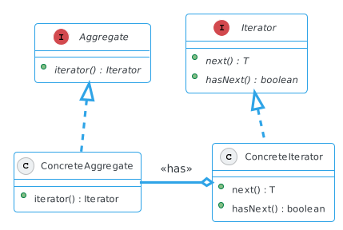

Iterator Pattern
Contents
Iterator Pattern#
Een manier om de elementen van een geaggregeerd object sequentieel te doorlopen zonder kennis te hebben van de onderliggende representatie.
een geaggregeerd object: een verzameling of collectie van iets
sequentieel doorlopen: veronderstelt een vaste volgorde
Collecties of verzamelingen ken je, denk bijvoorbeeld aan een array of ArrayList, dit zijn ook typen waar de volgorde vaststaat (je benadert ze op index). Maar ook jouw eigen typen kunnen een verzameling van dingen representeren waar je sequentieel doorheen zou willen stappen.
Implementatie#

In plaats van aggregate zal je ook vaak de term collection gebruikt zien worden.
Een voorbeeld#
public class Family {
private String name;
private List<String> members;
public Family(String name) {
this.name = name;
members = new ArrayList<>();
}
public void addMember(String fullName) {
String[] parts = fullName.split(" ");
if (parts[1].equals(name)) {
members.add(parts[0]);
}
}
public String getName() {
return name;
}
public List<String> getMembers() {
return members;
}
}
De klasse Family representeert (op eenvoudige) wijze een familie met familieleden, en deze worden bijgehouden in een collectie (de ArrayList members). We zullen zien dat aan deze uitwerking een aantal bezwaren kleven!
Family fam = new Family("Simpson");
fam.addMember("Marge Simpson");
fam.addMember("Homer Simpson");
fam.addMember("Bart Simpson");
fam.addMember("Lisa Simpson");
fam.addMember("Maggie Simpson");
Meer leden#
fam.addMember("Brian Griffin");
List<String> members = fam.getMembers();
for (int i = 0; i < members.size(); i++) {
System.out.println(members.get(i));
}
Marge
Homer
Bart
Lisa
Maggie
De implementatie doet wat het moet doen, het accepteert via de addMember methode alleen leden gelijk aan de familienaam van de instantie.
Nog meer leden#
List<String> members = fam.getMembers();
members.add("Stewie");
true
for (int i = 0; i < members.size(); i++) {
System.out.println(members.get(i) + " " + fam.getName());
}
Marge Simpson
Homer Simpson
Bart Simpson
Lisa Simpson
Maggie Simpson
Stewie Simpson
Maar Stewie is lid van de Griffin familie, niet van de Simpsons!
Omdat we via getMembers toegang hebben tot de (mutable) ArrayList members is het mogelijk deze direct aan te passen, buiten de klasse om, en dit is niet de bedoeling.
Snel Stewie maar weer verwijderen …
members.remove("Stewie");
true
Twee problemen#
Het vorige bevat twee problemen, welke?
te veel kennis van de onderliggende representatie
onvoldoende encapsulatie
We hebben te veel kennis van de onderliggende representie nodig, bijvoorbeeld dat leden van de familie in een ArrayList worden bewaard om ze sequentieel te kunnen doorlopen met een for-lus.
Met de methode addMembers zorgen we voor encapsulatie, de klasse is verantwoordelijk voor het toevoegen van leden. Maar de methode getMembers “lekt” teveel detail, het interne object waar leden in worden bijgehouden.
Hoe kunnen we deze twee problemen vermijden, maar toch door de leden van deze familie itereren?
For-each lussen#
for (T t : tList) { // Assume we have a List<T> named tList
// ...
}
Dit is de algemene syntax voor for-each lussen (of ook wel een enhanced for loop in Java genoemd). getMembers gaf een ArrayList terug waar je met dit type lus door de elementen kon itereren:
List<String> members = fam.getMembers();
for (String person: members) {
// ...
}
Wat maakt ArrayList nu zo bijzonder dat het met een andere syntax kan worden doorlopen? Een syntax waar geen index hoeft te worden bijgehouden om het element op te vragen, maar je tóch sequentieel doorheen kan stappen?
Je zal zien dat ArrayList helemaal niet zo speciaal is, en is het gewoon een bijzonder voorbeeld van een veel algemener idee, dat we ook voor onze eigen klassen kunnen gebruiken.
Iterator’s#
Stel …
we weten niet of een object op index te bevragen is
we hebben geen kennis van for-each
Welk type lus blijft over?
// setup things ...
while (something is true) {
// do suff ...
}
// use results ...
While lussen zijn goed om zolang het nodig is handelingen te herhalen. For-each lussen blijven in essentie doorlussen zolang er nog meer items te verwerken zijn.
Dus misschien ziet de essentie van het gedrag van onze for-each lus, wanneer uitgedrukt als een while lus, er als volgt uit:
while (hasMoreElements(tList)) {
T t = nextItemOf(tList);
// do stuff with t
}
Dit veronderstelt wel dat tList een staat bijhoudt (van het eerstvolgende element)!
Het bovenstaande zal niet echt werken, omdat de functies hasMoreElements en nextItemOf tussen aanroepen door extra gegevens zouden moeten bijhouden, anders zouden ze elke keer dezelfde antwoorden geven. Maar deze twee functies lijken een elegante, eenvoudige manier om het proces van itereren over gegevens te beschrijven: zolang er meer gegevens zijn, haal het volgende item op en verwerk het, en herhaal het voor het volgende element.
Om deze reden zouden we deze twee functies willen behouden, maar we moeten de toestand (of staat) bijhouden om ze goed te laten werken. Daarom moeten we een nieuw object maken, wiens enige verantwoordelijkheid is om ons te helpen itereren over tList.
Bovendien, als we het zo formuleren, klinkt dit gedrag niet erg specifiek voor ArrayList’s, we zouden over bijna alles kunnen itereren!
interface Iterator<T> {
// Does this sequence have at least one more value?
boolean hasNext();
// Get the next value in this sequence
// EFFECT: Advance the iterator to the subsequent value
T next();
// EFFECT: Remove the item just returned by next()
// NOTE: This method may not be supported by every iterator,
// ignore it for now
void remove();
}
Laten we zeggen dat een object iterable is als er een Iterator implementatie voor bestaat. Dat klinkt als een interface en deze is al voor ons gedefinieerd door Java in java.util.Iterator!
De enige taak van een Iterator is het bijhouden van een staat die nodig is om één voor één waarden te produceren uit een sequentie, of het nu een ArrayList of iets anders is. We zullen zo meteen zien hoe we deze interface kunnen implementeren, laten we zien hoe we het kunnen gebruiken.
Iterator<T> listIter = new ArrayListIterator<T>(aList);
while (listIter.hasNext()) {
T t = listIter.next();
// do stuff with t
}
Iterable’s#
Iterator<String> familyIter = new FamilyIterator<>();
while (familyIter.hasNext()) {
String person = familyIter.next();
// do stuff with person
}
Tot zover gaat het goed, we kunnen het gedrag van een for-each lus beschrijven in termen van een while lus over een Iterator. Maar hoe weet Java wat voor iterator het moet construeren? Tenslotte is de ArrayListIterator hierboven echt specifiek voor ArrayList’s en bijvoorbeeld een FamilyIterator alleen voor Family’s.
for (String person: fam) {
// ...
}
Als we willen dat onze for-each loops over andere soorten dingen werken (bijvoorbeeld Family), hebben we een ander mechanisme nodig. Laten we zeggen dat een object iterable is als er een Iterator implementatie voor bestaat. Dit klinkt als een andere interface!
// Represents anything that can be iterated over
interface Iterable<T> {
// Returns an iterator over this collection
Iterator<T> iterator();
}
Ook deze interface is al gedefinieerd door Java, en deze interface dwingt af dat als een object iterable wil zijn er ook een Iterator implementatie voor moet bestaan.
class ArrayList<T> implements Iterable<T> {
// lots of other details ...
public Iterator<T> iterator() {
return new ArrayListIterator<T>(this);
}
}
In de werkelijke Java implementatie van ArrayList zal je iets als in het bovenstaande letterlijk terugzien.
Family als Iterable#
public class Family implements Iterable<String> {
private String name;
private List<String> members;
public Family(String name) {
this.name = name;
members = new ArrayList<>();
}
public void addMember(String fullName) {
String[] parts = fullName.split(" ");
if (parts[1].equals(name)) {
members.add(parts[0]);
}
}
public String getName() {
return name;
}
@Override
public Iterator<String> iterator() {
return members.iterator();
}
}
We kunnen hier gebruik maken van het feit dat, omdat we door de familieleden willen itereren, we een iterator teruggeven voor de ArrayList members. Met andere woorden in dit geval hoeven we geen aparte FamilyIterator te gebruiken.
Mochten we in de toekomst een andere structuur willen kiezen dan hoeven we alleen maar een andere implementatie voor de Iterator terug te geven. Clients die Family gebruiken hoeven daar verder niets van te weten en kunnen nog steeds met een for-each lus de elementen doorlopen.
Family fam = new Family("Simpson");
fam.addMember("Marge Simpson");
fam.addMember("Homer Simpson");
fam.addMember("Bart Simpson");
fam.addMember("Lisa Simpson");
fam.addMember("Maggie Simpson");
for (String person : fam) {
System.out.println(person + " " + fam.getName());
}
Marge Simpson
Homer Simpson
Bart Simpson
Lisa Simpson
Maggie Simpson
Een ander voorbeeld#
for i in range(10):
...
Het idee van iterables is in Python ingebakken, het is onderdeel van de taal. Hoe vaak heb je de Python functie range wel niet gebruikt om een reeks van getallen te doorlopen?
for (Integer i : new Range(10)) {
// ...
}
Hoe zouden we gebruik kunnen maken van het Iterator pattern om een Range implementatie te maken die Python’s range simuleert?
public class Range implements Iterable<Integer> {
private int start;
private int stop;
public Range(int start, int stop) {
this.start = start;
this.stop = stop;
}
public Range(int stop) {
this(0, stop);
}
public int getStart() {
return start;
}
public int getStop() {
return stop;
}
@Override
public RangeIterator iterator() {
return new RangeIterator(this);
}
}
Om te beginnen is een klasse Range nodig die de methode interator implementeert en een RangeIterator teruggeeft. Let ook op dat de klasse een de instantie (this) als parameter doorgeeft aan RangeIterator.
public class RangeIterator implements Iterator<Integer> {
private Range range;
private int nextIndex;
public RangeIterator(Range range) {
this.range = range;
this.nextIndex = range.getStart();
}
public boolean hasNext() {
return nextIndex < range.getStop();
}
public Integer next() {
int index = nextIndex;
nextIndex++;
return index;
}
public void remove() {
throw new UnsupportedOperationException();
}
}
De enige veratwoordelijkheid van deze klasse is om een staat bij te houden, in dit geval de eerstvolgende index (nextIndex).
for (Integer i : new Range(1, 5)) {
System.out.println(i);
}
Met deze implementatie kan een reeks worden doorlopen met een for-each lus.
Tightly coupled#
Dit is een duidelijk geval van tight coupling want de klasse RangeIterator is afhankelijk van de klasse Range (en vice versa) en deze afhankelijkheid is in dit geval onvermijdelijk.
De klasse RangeIterator is ook een klasse waarvan je zou willen dat een client deze niet zou kunnen instantiëren, het is iets dat in het ideale geval alleen door de klasse Range zou moeten kunnen om deze intieme relatie te “verbergen”.
Je zal in de (Java) praktijk vaak inner classes gebruikt zien worden om dit probleem op te lossen. Net als velden zoals je ze kent kunnen in Java ook klassen als een veld worden gedefiniëerd, en worden daarmee een klasse in een klasse.
Een inner class heeft (net als methoden) daarmee ook toegang tot this, de instantie van de “omsluitende” klasse.
public class Range implements Iterable<Integer> {
private int start;
private int stop;
public Range(int start, int stop) {
this.start = start;
this.stop = stop;
}
public Range(int stop) {
this(0, stop);
}
public RangeIterator iterator() {
return new RangeIterator();
}
private class RangeIterator implements Iterator<Integer> {
private int nextIndex;
public RangeIterator() {
this.nextIndex = Range.this.start;
}
public boolean hasNext() {
return nextIndex < Range.this.stop;
}
public Integer next() {
int index = nextIndex;
nextIndex++;
return index;
}
public void remove() {
throw new UnsupportedOperationException();
}
}
}
De Iterator als inner class, let op dat de toegang tot this verloopt via de omsluitende klasse (bijvoorbeeld Range.this.start). Het lijkt op de aanroep van een statisch veld this, maar in dit geval wijst het naar de instantie van de omsluitende klasse!
for (Integer i : new Range(1, 5)) {
System.out.println(i);
}
1
2
3
4
Let op#
Een andere gedachte zou zijn om zowel Iterator als Iterable in een enkele klasse te implementeren. Doe dit niet, want ze hebben ieder een eigen verantwoordelijkheid.
Een Iterator is van nature stateful, dat wil zeggen dat als je er iteraties mee uitvoert, het steeds blik op de wereld moet bijwerken (een veranderende staat). Een Iterable heeft andere verantwoordelijkheden en moet alleen maar nieuwe iterators kunnen maken.